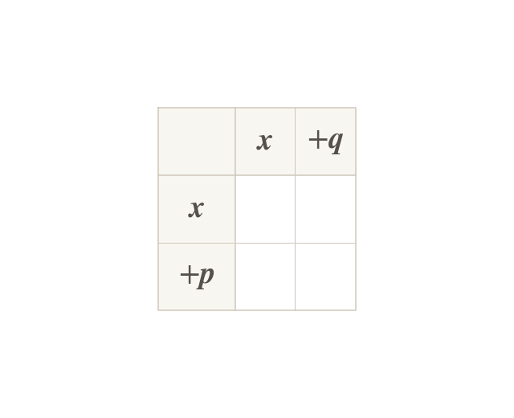
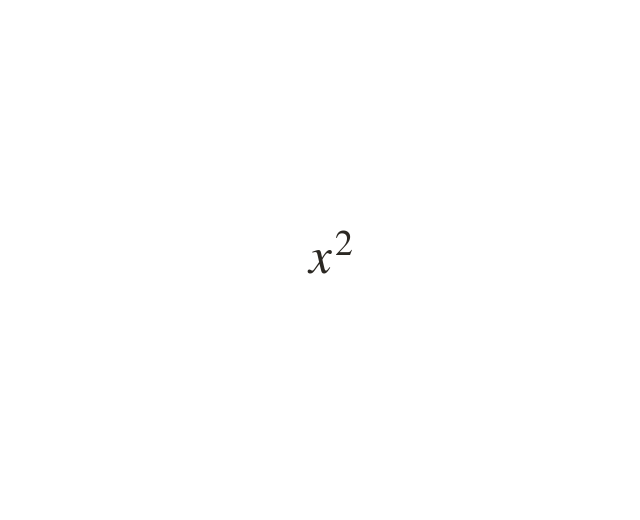
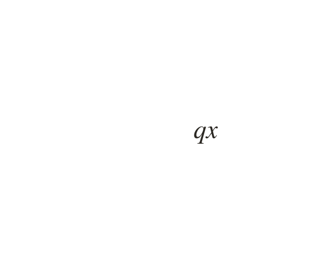
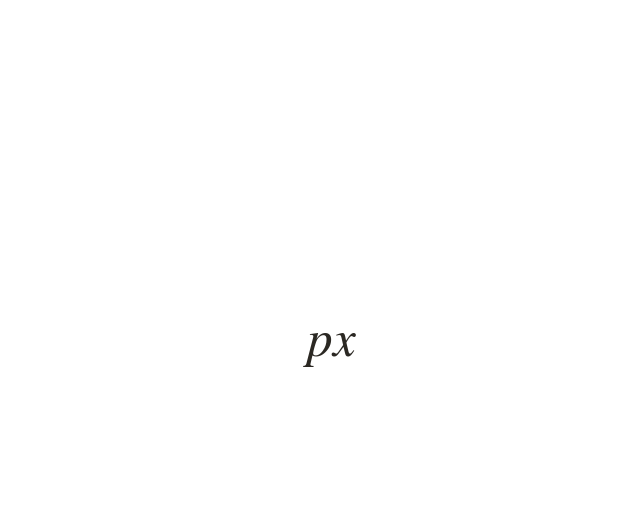
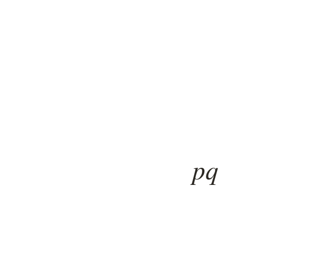
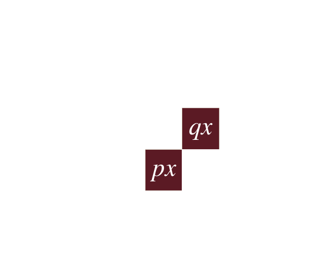
Where the two numbers come from
expands to So the two numbers add to b and multiply to c.
Expanding gives So in + bx + the two numbers add to b and multiply to
Expanding turned into
Today runs that backwards: start from the quadratic and find the two brackets it came from.
Work down the page at your own pace. Write every answer in your book first, then click to check it.
Read each card, then follow the worked examples one step at a time.






expands to So the two numbers add to b and multiply to c.
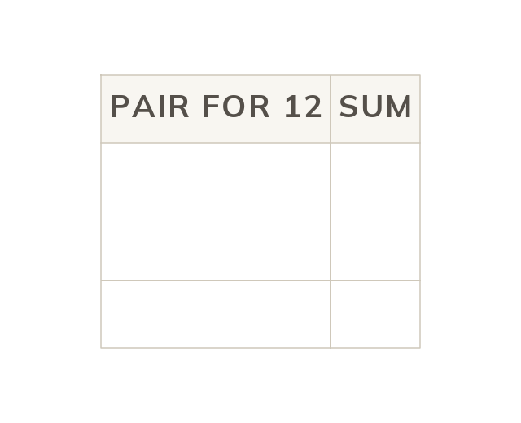
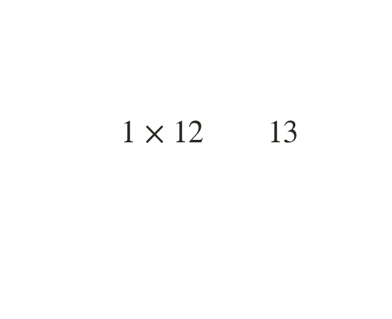
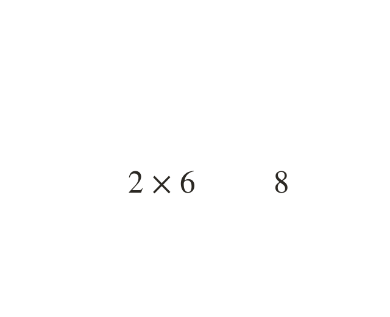
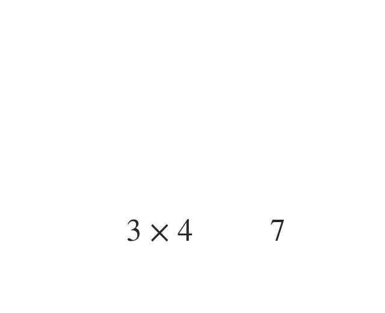
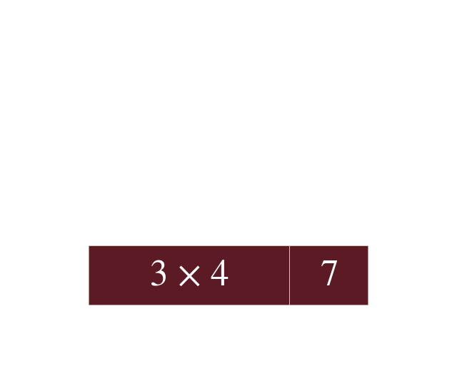
A number has only a few factor pairs, so they are listed first. The pair that also adds to b is the one.
Pick an answer. If it's wrong, the feedback tells you which mistake it was.
Read each card, then follow the worked examples one step at a time.
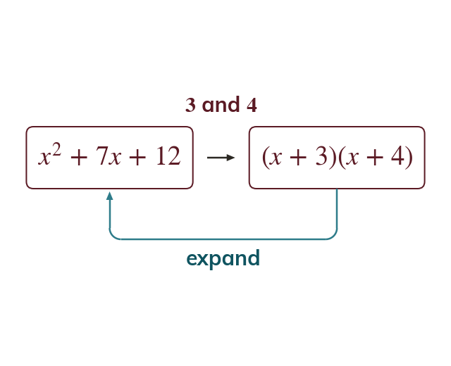
The two numbers go straight into the brackets, as Expanding the brackets back out checks the answer.
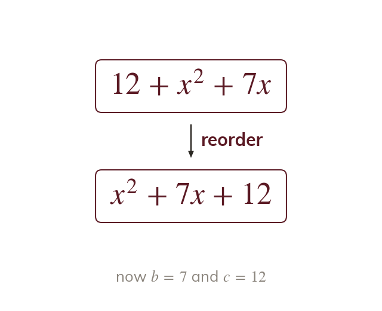
The terms of a quadratic can be written in any order. Rewrite it as + bx + before choosing the pair.
Pick an answer. If it's wrong, the feedback tells you which mistake it was.
Finished? Next lesson: 9.8.2 Quadratics with Negatives.
For each skill, tap the one that is true for you today. Your Revise pages start with anything you mark Not yet.
Your ratings are saved on this device only.
Log in, then search for a code to practise that skill.
Videos, worksheets and more on each part of this lesson.